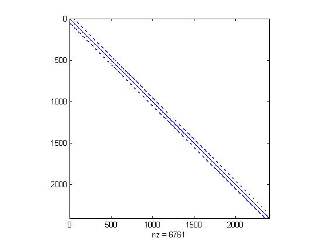

flowMatrix
System of linear equations representing pixel flow
Contents
Description
T = flowMatrix(E, R) computes a sparse linear system representing flow from pixel to pixel in the DEM represented by the matrix of height values, E. R is the matrix of pixel flow directions as computed by demFlow. T is numel(E) -by- numel(E). The value T(i,j) is the negative of the fractional flow from pixel j to pixel i, where pixels are numbered columnwise. For example, if E is 15-by-10, then T is 150-by-150, and T(17,18) is the negative of the fractional flow from pixel 18 (row 3, column 2) to pixel 17 (row 2, column 2).
T = flowMatrix(E, R, d1, d2) specifies the spacing of pixels; d1 is the horizontal pixel spacing. d2 is the vertical pixel spacing. d1 and d2 are optional; if omitted, a value of 1.0 is assumed.
Note: Connected groups of NaN pixels touching the border are treated as having no contribution to flow.
Reference
Tarboton, "A new method for the determination of flow directions and upslope areas in grid digital elevation models," Water Resources Research, vol. 33, no. 2, pages 309-319, February 1997.
Example
E = peaks; R = demFlow(E); T = flowMatrix(E, R); spy(T)